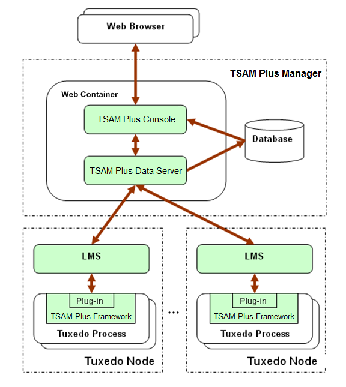
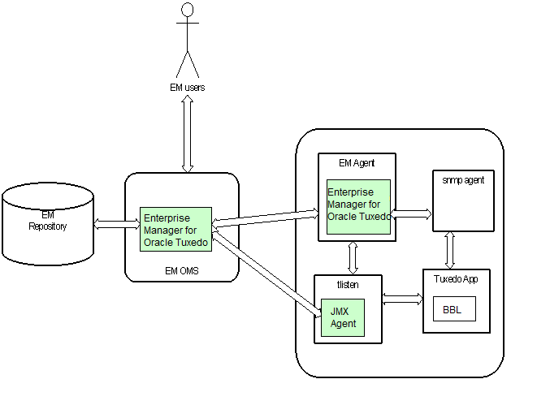

Oracle Tuxedo is widely used by enterprises that develop and use mission-critical applications. It acts as the infrastructure layer in distributed computing environments. The complexity of Oracle Tuxedo and the applications running on top of it makes performance measurement extremely complex.
Oracle TSAM Plus provides comprehensive monitoring and reporting for Oracle Tuxedo system and applications. It includes three components: Oracle TSAM Plus Agent, Oracle TSAM Plus Manager, and Enterprise Manager for Oracle Tuxedo.
The Oracle TSAM Plus agent enables collection of various applications performance metrics (including call path, transactions, services, system servers). The Oracle TSAM Plus Manager provides graphical user interface that correlates and aggregates performance metrics collected from one or more Tuxedo domains. It displays this information in interactive real time. The Enterprise Manager for Oracle Tuxedo integrates Tuxedo management and monitoring with Oracle Enterprise Manager, allowing Tuxedo infrastructure and applications to be monitored and managed from the same console as other Oracle products.
Why Use Oracle TSAM Plus?
Because the Oracle Tuxedo framework and applications are widely deployed, comprehensive monitoring and reporting capability becomes increasingly critical. For example, you may want to know:
the end-to-end execution time of an ATMI request
where a call hangs
how many requests to a service failed during a certain time period
how many requests went through a domain gateway during a certain time period
the current status of all participants in an XA transaction
Oracle TSAM Plus can provide this information and allows you to easily identify bottlenecks and expedite problem resolution. Oracle TSAM Plus can also help with performance tuning and capacity planning.
Oracle TSAM Plus also allows you to define event alerts. The Oracle TSAM Plus Console reports an event when an alert is triggered notifying you to take proper action.
Oracle TSAM Plus Features
The following is a list of Oracle TSAM Plus features:
Tracking Oracle Tuxedo system call transmissions. Each monitored call is assigned a unique ID and is propagated along a call path tree. Oracle TSAM Plus is able to track calls across multiple machines and domains.
Real-time call path tree tracking of a monitored request is displayed and the performance metrics for each step are available.
Call pattern summarization based on historical call tracking data.
Monitoring a particular Oracle Tuxedo service, checking its response time, IPC queue length and execution status. The data can be queried using recent or historical data.
Gathers Oracle Tuxedo GWTDOMAIN, BRIDGE, and GWWS overall throughput, graphically displaying the business data flow curve.
Tracking transactions with XA API specifications. Displays execution status and time used on each XA call. Oracle TSAM Plus helps diagnose global distributed transactions.
The Oracle TSAM Plus Manager console allows you to create “Alert” definitions that generate events when predefined thresholds are reached. The events can be posted to Oracle Tuxedo and received by Oracle Tuxedo Event Broker subscribers.
Programming APIs that retrieve metadata packaged in a monitored call. Helps developers make application decisions dynamically.
Flexible monitoring controls. The sampling can be based on interval or ratio and the monitoring can be turned on or off dynamically without restarting application.
Plug-in mechanism for performance metrics collection at the Oracle Tuxedo infrastructure level. It provides extensive integration capability between Oracle TSAM Plus and other third-party products.
Powerful event triggers without sending raw metrics data to the Oracle TSAM Plus Manager. It supports flexible FML boolean expression to achieve advanced event trigger conditions. Events can be posted to the Oracle Tuxedo Event Broker and/or the Oracle TSAM Plus Manager.
Scalable Oracle Tuxedo-side server monitoring designed to meet small, middle and large Oracle Tuxedo runtime environments.
J2EE-based solution. A pure Web-based solution that is easy to deploy, configure and use. The Oracle TSAM Plus Console can be accessed anywhere using a compatible Web browser.
Accounting and chargeback monitoring, which is able to collect data of all users and transactions during online processing and make offline analysis.
TSAM Plus manager HA and scaling
TSAM Plus agent fails over to the backup TSAM Plus manger in case the first TSAM Plus manager is not available
Monitor same set of Tuxedo domains from more than one consoles
SNMP traps for Tuxedo events
Domains configuration wizard
Rule based automatic monitoring data purge
Enterprise Manager for Oracle Tuxedo, which is an Oracle Enterprise Manager plug-in, provides the following monitoring and management features for Oracle Tuxedo product family:
Same console for management and monitoring as other Oracle products
Easy Tuxedo target discovery and automatic update
Monitor health of multiple domains from same console
Figure 1 Oracle TSAM Plus Architecture - TSAM Plus Manager and Agent

Figure 2 Oracle TSAM Plus Architecture - Enterprise Manager for Oracle Tuxedo

Oracle TSAM Plus includes three components:
Oracle TSAM Plus Agent: Performs Tuxedo-side data collection.
Oracle TSAM Plus Manager: Performs data storage, aggregation, computing and representation.
Enterprise Manager for Oracle Tuxedo: An Oracle Enterprise Manager plug-in that performs monitoring and management for Oracle Tuxedo product family.
Oracle TSAM Plus Agent
The Oracle TSAM Plus Agent handles all Tuxedo-side back-end logic. It works in conjunction with the Oracle TSAM Plus Manager, and includes the following sub-components:
TSAM Plus Framework: An Oracle Tuxedo-side facility that defines and controls performance metrics collection behavior. It uses the Tuxedo traditional interface and can be easily integrated into an existing Tuxedo management suite.
TSAM Plus Plug-in: An extensible mechanism invoked by the TSAM Plus Framework. The Oracle TSAM Plus Agent provides default plug-ins to send data to the Local Monitor Server (LMS), and then to the Oracle TSAM Plus Manager. The default plug-in also checks event triggers, and generates events if needed.
You can develop your own plug-ins for additional data processing. A customized plug-in can be linked to an existing plug-in chain, or replace the default plug-in.
Local Monitor Server (LMS): The LMS is an Oracle Tuxedo system server. The Oracle TSAM Plus default plug-in sends data to the LMS. The LMS then passes the data to the Oracle TSAM Plus Manager in HTTP/XML message format.
JMX Agent: A component working in conjunction with Enterprise Manager for Oracle Tuxedo, which enables you to monitor and manage Oracle Tuxedo applications through the JMX interface and furthermore, through the Oracle Enterprise Manger cloud control 12c.
accrpt: An utility to analyze accounting and chargeback information generated by -a option in servopts(5).
The Oracle TSAM Plus Manager is built on standard J2EE technology. It includes following components:
TSAM Plus Data Server: Data server that accepts data from the LMS and stores the data in the database. It is a J2EE application.
TSAM Plus Console: The TSAM Plus presentation layer. It is a J2EE Web application and can be accessed via a compatible Web browser. After logging on to the Oracle TSAM Plus Console, you have access to full Oracle TSAM Plus functionality.
Enterprise Manager for Oracle Tuxedo is an Oracle Enterprise Manager plug-in, by which users are able to monitor and manage Oracle Tuxedo product family in a centralized console with other product such as Weblogic Server and Oracle Database.
After becoming familiar with the Oracle TSAM Plus Product Overview, refer to the following topics for installing, deploying, and using Oracle TSAM Plus.